Domy energooszczędne i szkieletowe - od projektu po meble
Projektujemy i budujemy domy energooszczędne, pasywne i zeroenergetyczne. Całą inwestycję prowadzimy w jednych rękach: od pozwolenia na budowę, przez stan deweloperski lub pod klucz, po meble na wymiar.
EcoTek Home Sp. z o.o. powstała z połączenia dwóch firm z długim stażem: biura projektowego BPBO W. Lamprecht, które od 1986 roku wykonuje pełnobranżowe projekty budowlane i obsługuje inwestycje, oraz PPUH MAG-MART Romuald Buczkowski, która od 1995 roku montuje konstrukcje drewniane, projektuje i wykonuje meble.
Dzięki temu dom powstaje u nas warstwa po warstwie, w jednych rękach: projekt, konstrukcja i wnętrze. Najbliższe są nam budynki energooszczędne, pasywne i zeroenergetyczne, które zużywają mało energii i same produkują jej część ze źródeł odnawialnych.
od 1986projekty budowlane, doradztwo prawne i techniczne, obsługa inwestycji
od 1995konstrukcje drewniane oraz meble na wymiar
Trzy warstwy jednego domu
Nie trzeba szukać osobno architekta, wykonawcy i stolarza. Każdą część możemy przygotować osobno albo poprowadzić całość.
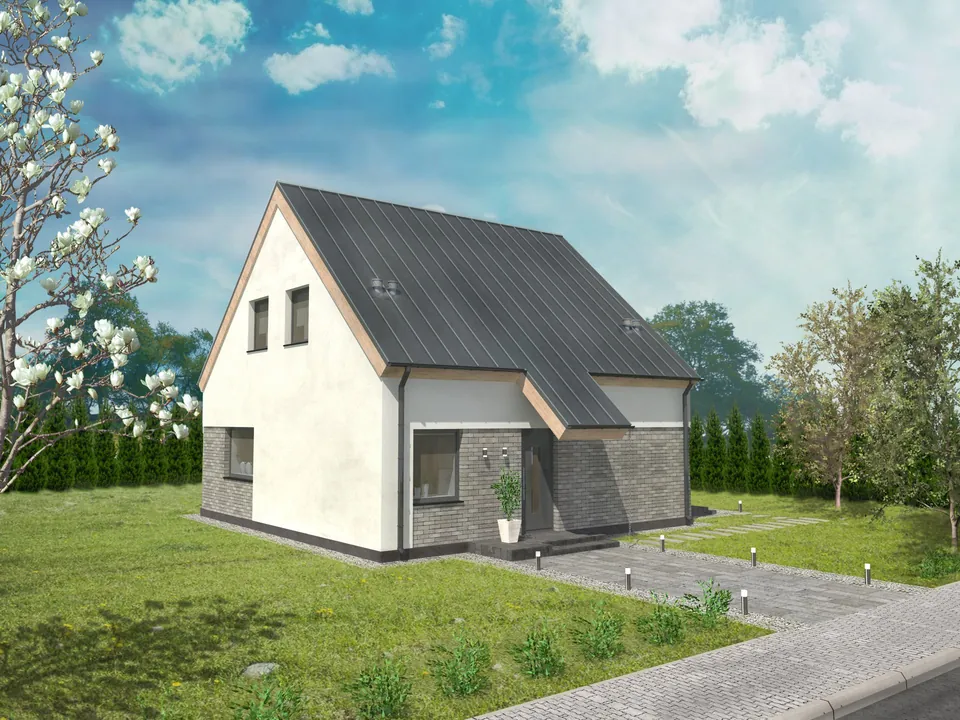
Projekt
Projekty budowlane, techniczne i wykonawcze domów jednorodzinnych, budynków wielorodzinnych, obiektów użyteczności publicznej, handlowych i przemysłowych. Zakres dokumentacji ustalamy z inwestorem, od koncepcji po projekt wykonawczy.
wszystkie branże: architektura, konstrukcja, instalacje sanitarne i elektryczne, drogi, technologia
prowadzenie sprawy do pozwolenia na budowę lub zgłoszenia, z dokumentami w imieniu inwestora
inwentaryzacje i skanowanie 3D, projekty renowacji zabytków, programy funkcjonalno-użytkowe
przetargi, nadzór autorski i inwestorski
Budowa
Budujemy domy jednorodzinne w stanie deweloperskim lub pod klucz, w technologii murowanej i drewnianej. Specjalizujemy się w domach energooszczędnych w modułowej technologii drewnianej, szkieletowej GreMagor i CLT.
Kosztorys przygotowujemy indywidualnie, z uwzględnieniem działki i wybranej technologii, a inwestora prowadzimy do uzyskania zgody na użytkowanie.
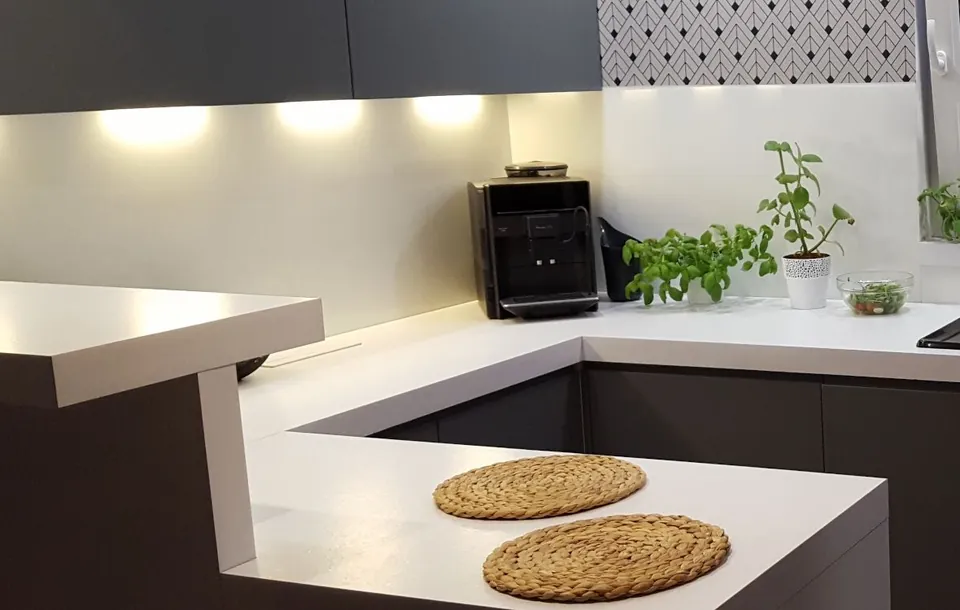
Wnętrza i meble
Projektujemy i montujemy meble na wymiar: kuchnie, szafy i meble hotelowe, a także schody, drzwi drewniane i inne elementy wykończenia. Dom może zostać oddany od razu z umeblowaniem.
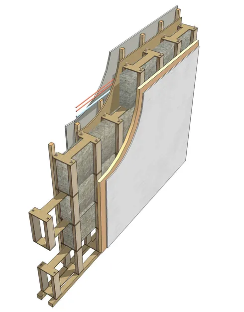
Przekrój ściany szkieletowej: konstrukcja drewniana, izolacja, poszycie i elewacja.
Domy szkieletowe w technologii GreMagor
Dom powstaje z prefabrykowanych elementów, dlatego konstrukcję montujemy w krótkim czasie, a moduły można dopasować do własnego układu. Prowadzimy całość: od projektu architektonicznego po oddanie gotowego budynku.
Drewno konstrukcyjne C24: certyfikowane, o równomiernej gęstości i przewidywalnej wytrzymałości
System modułowy: prefabrykowane elementy skracają budowę i ułatwiają zmiany w projekcie
Izolacja: wełna mineralna i folie paroizolacyjne, a do tego izolacja akustyczna od hałasu z zewnątrz
Bezpieczeństwo: impregnaty i powłoki ogniochronne, konstrukcja na długie lata
Energooszczędnyzużywa mniej energii dzięki izolacji, wentylacji i oszczędnemu oświetleniu
Pasywnybardzo małe zapotrzebowanie na energię, korzysta z ciepła słońca
Zeroenergetycznysam produkuje tyle energii, ile zużywa: fotowoltaika, pompa ciepła
Realizacje
Domy szkieletowe w Polsce i w Niemczech oraz budynki publiczne według naszych projektów. Zdjęcia można przesuwać i powiększać.
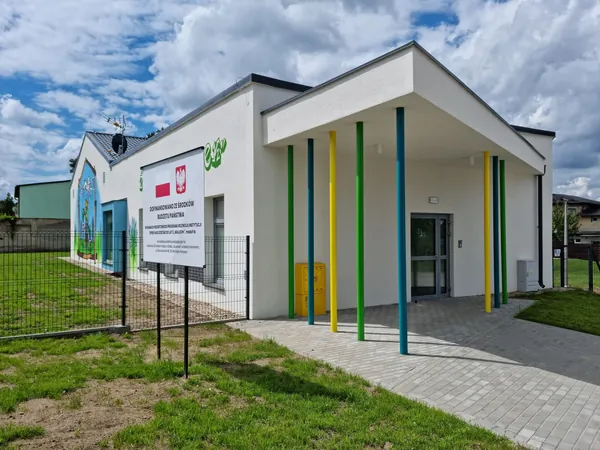
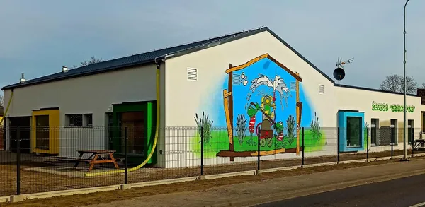
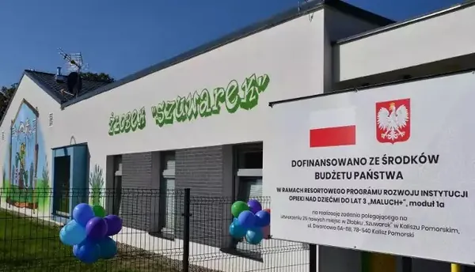
1 / 3
Żłobek Miejski „Szuwarek”
Kalisz Pomorski, woj. zachodniopomorskie
Otwarty 1 października 2022 r., budowa trwała 9 miesięcy. Inwestycja wygrała konkurs na najlepszą zakończoną inwestycję.
projekt budynku i zagospodarowania terenu
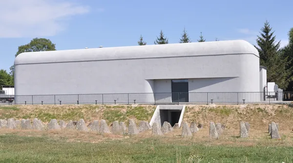
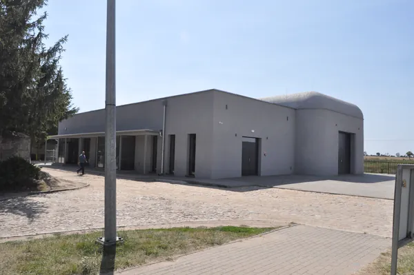
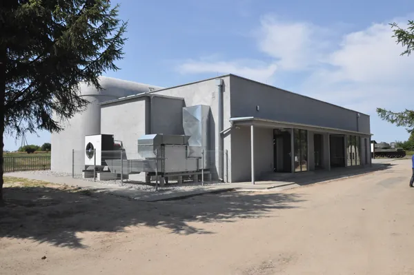
1 / 3
Muzeum Fortyfikacji i Nietoperzy
Pniewo, gmina Międzyrzecz
Przebudowa i rozbudowa budynku z nowym holem i salą ekspozycyjną, 632,56 m² powierzchni użytkowej.
projekt
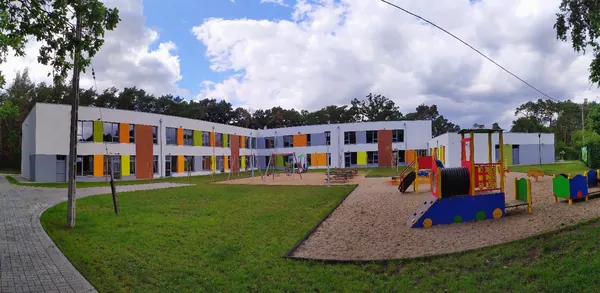
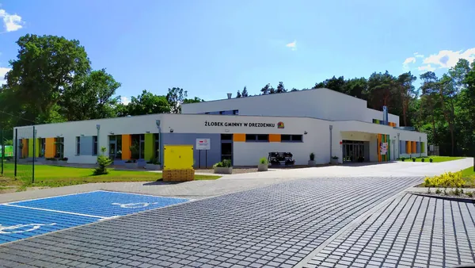
1 / 2
Żłobek i przedszkole z placem zabaw
Drezdenko, powiat strzelecko-drezdenecki
Dwukondygnacyjny budynek w kształcie odwróconej litery C, 3244 m² powierzchni użytkowej.
projekt
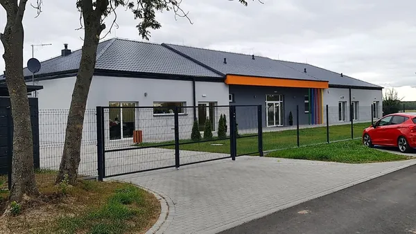
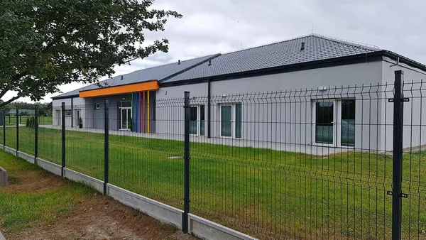
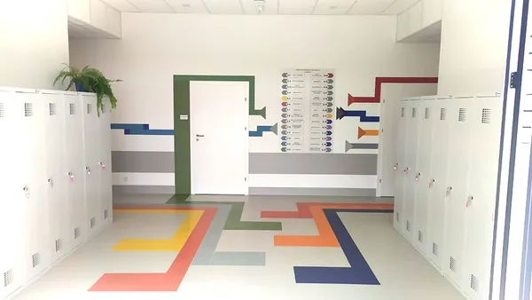
1 / 3
Centrum Opiekuńczo-Mieszkalne
Racław, gmina Bogdaniec
Budynek dostosowany do osób z niepełnosprawnościami, 499,54 m² powierzchni zabudowy.
projekt w formule „zaprojektuj i wybuduj”
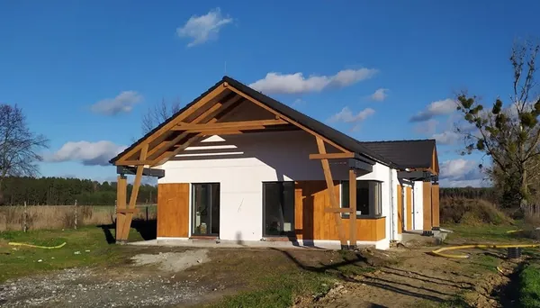
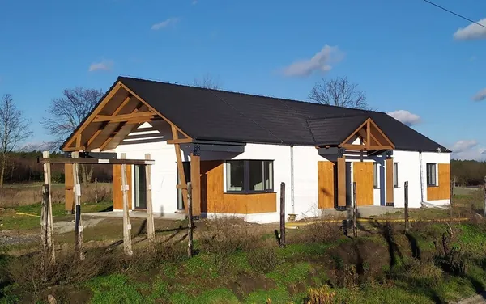
1 / 2
Dom jednorodzinny GreMagor
dom szkieletowy drewniany
Prosta bryła ze stalowymi łącznikami i drewnianymi detalami, 145 m² powierzchni użytkowej.
projekt i budowa
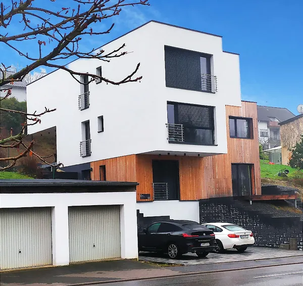
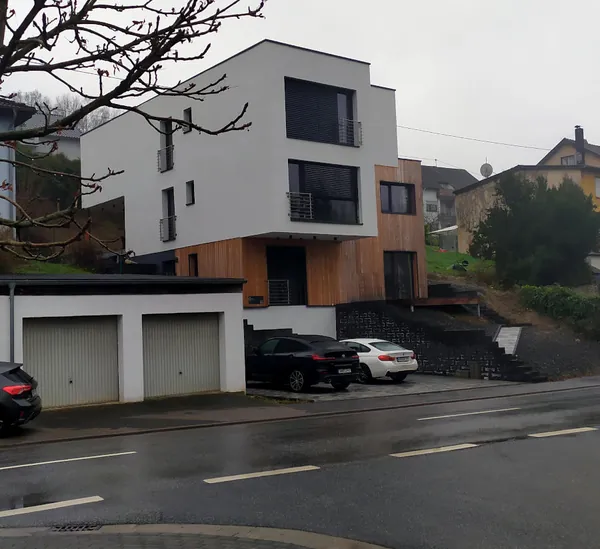
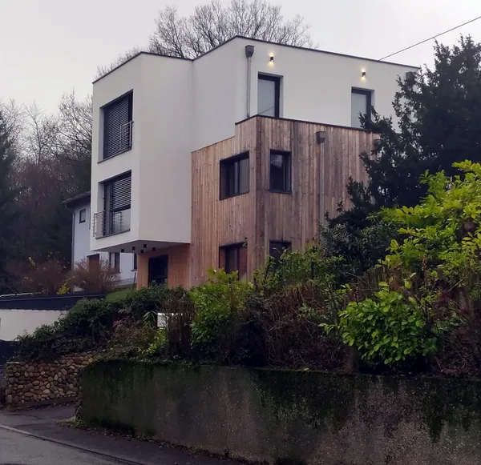
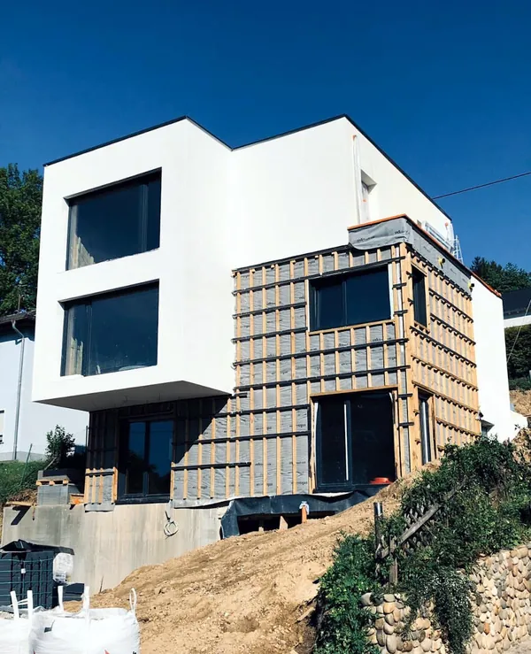
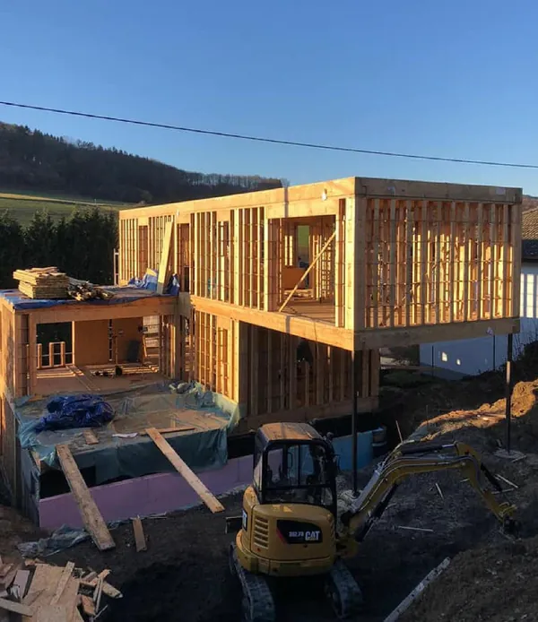
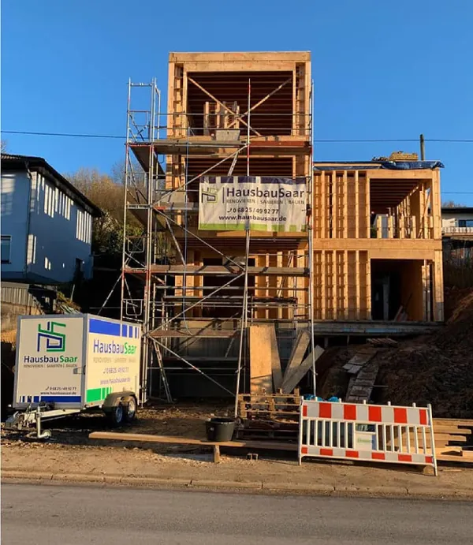
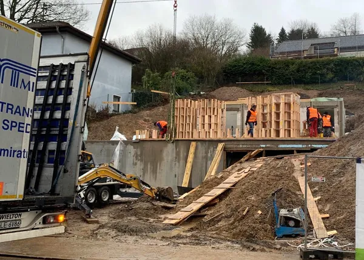
1 / 7
Dom dwulokalowy pod Illingen
Niemcy
Konstrukcja szkieletowa GreMagor, 180 m² powierzchni użytkowej. W galerii cała budowa, od szkieletu po elewację.
budowa
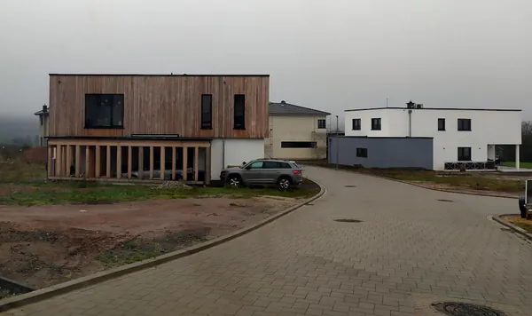
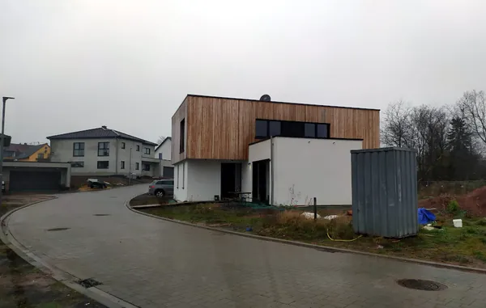
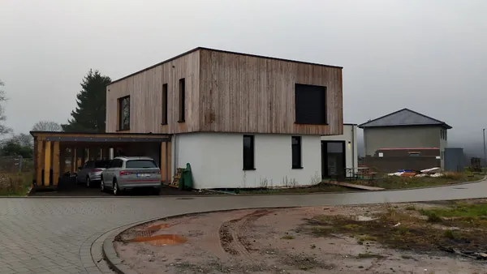
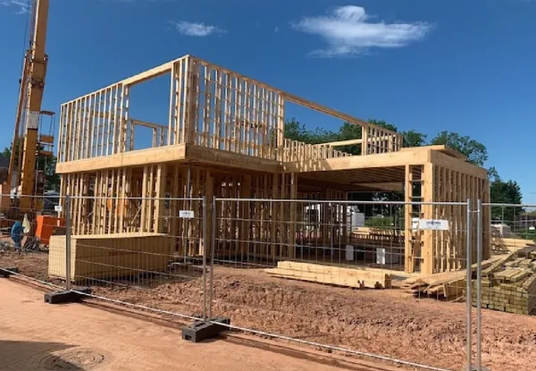
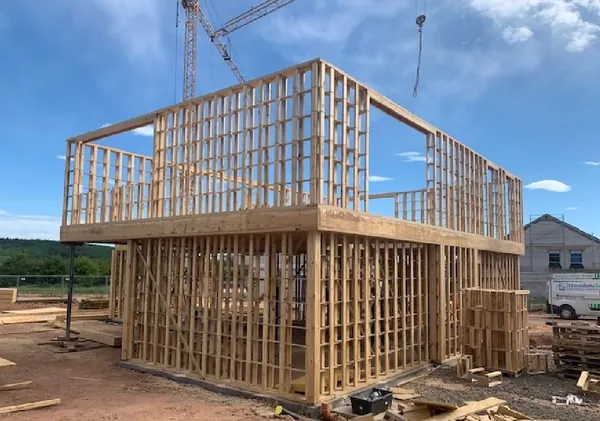
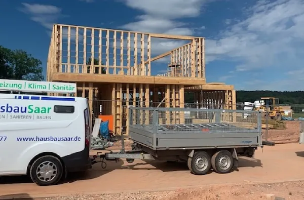
1 / 6
Dom jednorodzinny w Merchweiler
Niemcy
Lekka konstrukcja szkieletowa w systemie GreMagor, 145 m² powierzchni zabudowy.
budowa
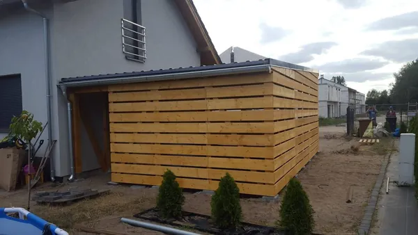
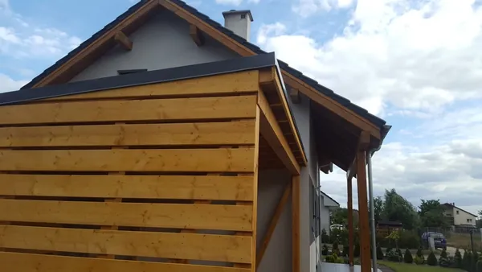
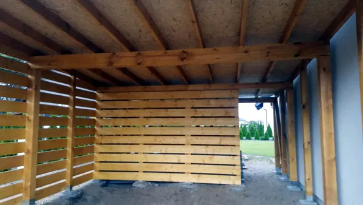
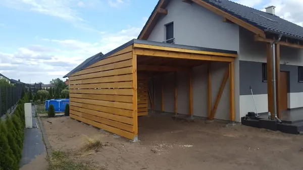
1 / 4
Wiata garażowa z pomieszczeniem gospodarczym
okolice Gorzowa Wielkopolskiego
Drewniana konstrukcja w klasycznym stylu.
wykonanie i montaż
Zdjęcia żłobka w Kaliszu Pomorskim: UM Szczecin.
Projekty domów
Nasze koncepcje do dopasowania: od całorocznego domku o powierzchni użytkowej 40 m² po dom na wodzie na stalowym pontonie.
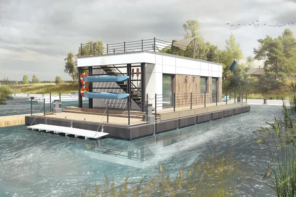
Dom na wodzie
Koncepcja: szkielet drewniany GreMagor na stalowym pontonie.
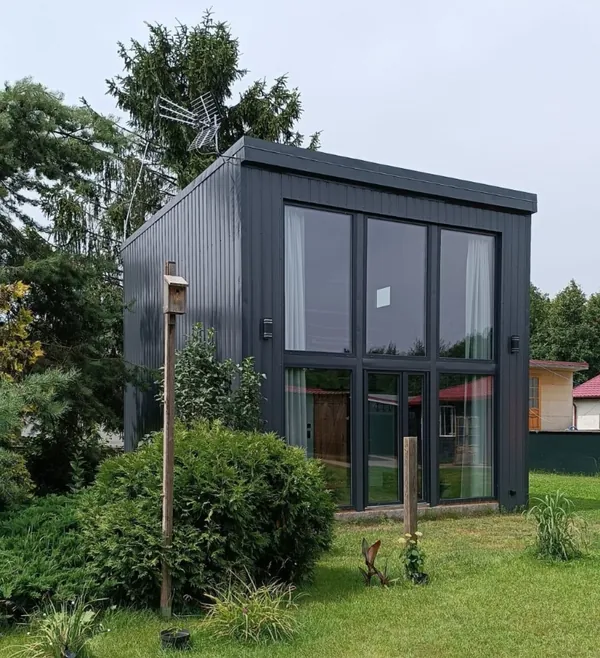
Domek letniskowy całoroczny
40 m² powierzchni użytkowej, salon z aneksem, łazienka i antresola.
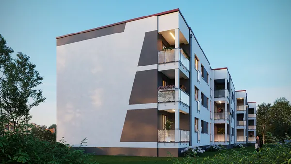
Domy wielorodzinne
Trzykondygnacyjne budynki, na każdej kondygnacji trzy mieszkania.
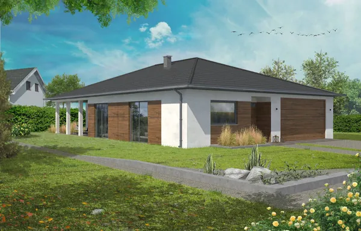
Dom parterowy T-1
Przestronny dom energooszczędny z wyraźnym podziałem na strefę dzienną i nocną.